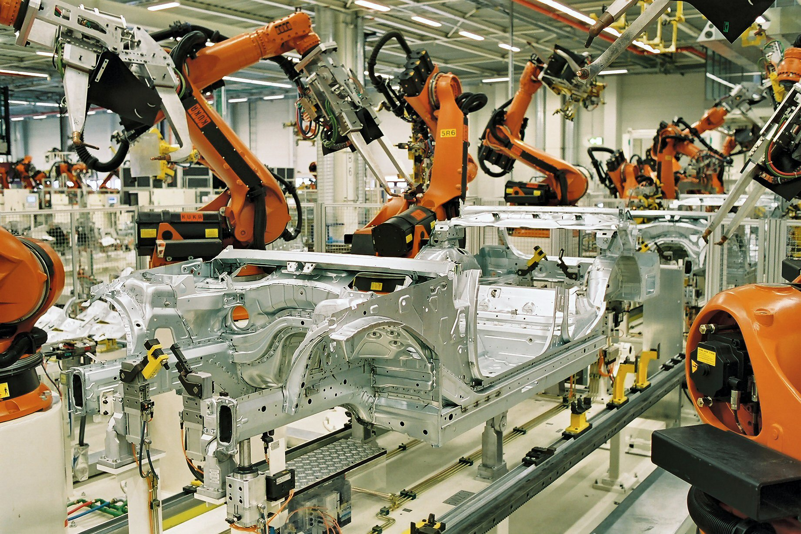

{kind=link}
Path 01Data
자동차 데이터 기초
자동차 공장은 VIN 이력, station event, PLC tag, robot controller log, torque result, vision image, EOL test, QMS record, supplier lot, warranty feedback을 증거로 묶어야 합니다.
VIN genealogyStation eventTraceability
FAB AI가 chamber, recipe, wafer, trace, yield를 중심으로 생각한다면, 자동차 제조 AI는 VIN, station, takt time, robot cell, torque result, vision image, Andon, safety zone을 중심으로 움직입니다.
자동차 제조 AI를 별도 시리즈로 둔 이유는 단순 비유가 금방 틀리기 때문입니다. robot cell, takt window, Andon event, VIN history는 wafer와 chamber와 다른 리듬을 만듭니다. FAB AI와 겹치는 부분은 분명 있지만, 경계선을 잡아야 합니다.

자동차 공장은 VIN 이력, station event, PLC tag, robot controller log, torque result, vision image, EOL test, QMS record, supplier lot, warranty feedback을 증거로 묶어야 합니다.
로봇셀은 로봇 경로, 그리퍼, 용접건, 카메라, 지그, PLC, Safety PLC, 라이트커튼, 작업자 모드, 유지보수 모드, cycle time 예산이 함께 움직이는 제어 단위입니다.
자동차 공장 Agent는 라인 리듬을 존중해야 합니다. 읽기, 요약, 이슈 묶기, 보고서 초안은 가능하지만, 설비나 품질 상태를 바꾸는 action은 승인, rollback, 책임자가 필요합니다.
자동차 제조 AI는 로봇 안전, 기능안전, IATF 16949, APQP, FMEA, PPAP, Control Plan, OT 보안, audit log, human-in-the-loop 검증 언어를 알아야 합니다.
처음에는 도구 설명보다 경계선 정리가 먼저입니다. FAB식 사고와 자동차식 사고가 어떻게 다른지 잡아두면 이후 로봇, 비전, Agent, RAG 글이 훨씬 자연스럽게 이어집니다.
선수 지식으로는 폐쇄망 문서 RAG, MCP와 MES Agent, 제조업 온프렘 LLM, FDC 기초를 연결하면 좋습니다.